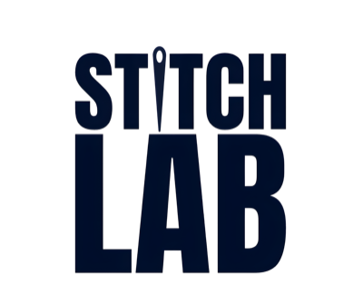
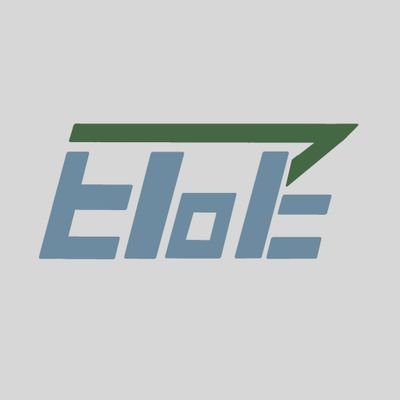
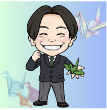

Booth Exhibitors
ブース出展
 CHEERS!
CHEERS! AIESEC Japan
AIESEC Japan
Stitch Lab
学生団体EToE Business Contest KING
Business Contest KING 孫正義育英財団
孫正義育英財団
折り鶴から始める平和活動1日の流れ・登壇者・プレゼン大会出場者・ブース情報を、この1ページに。
迷ったら、まずここを開いてください。
受付（ホワイエ）から入って、D会場 or 常設会場エリアに移動できます。C会場は常設会場を通ります。
※ タイムテーブルは変更の可能性があります。
※ ブース／コミュニティスペースは10:30〜16:20まで常時オープン、自由出入り可能。
※ 各セッションのタイトルをタップすると詳細が開きます。
全国から集まった高校生・大学生が、社会課題や地域活性化、起業などさまざまなテーマについて発表するプレゼンテーションを観覧可能。PITCH ／ 6組・持ち時間各10分。
CHEERS!AIESEC Japan
Stitch Lab
学生団体EToEBusiness Contest KING孫正義育英財団
折り鶴から始める平和活動会場でよくお問い合わせいただく質問をまとめました。